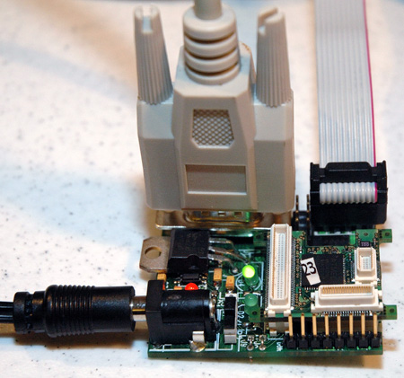
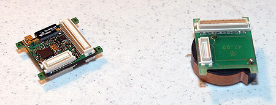
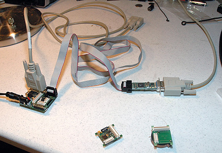
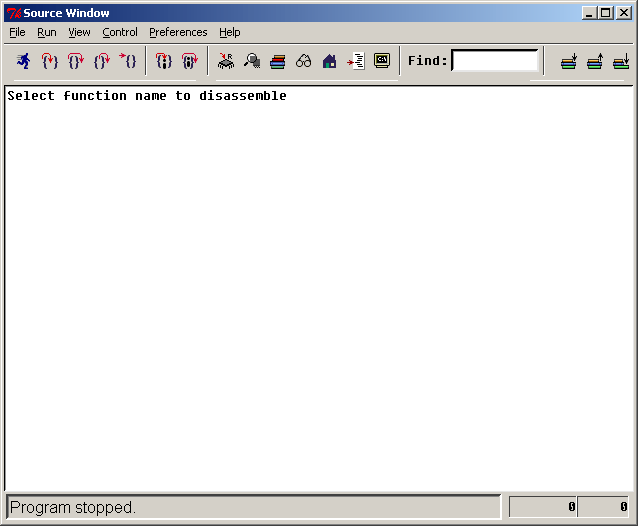
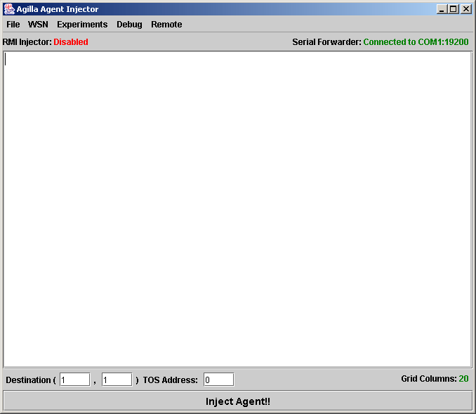

The Tyndall25 module has an Atmega 128L processor, 128-Kbyte self-programming Flash Program Memory, 4-Kbyte SRAM, 4-Kbyte EEPROM, and 64K of optional external memory. i.e. 128K bytes.
Here is a programming board with a Tyndall25 mote attached. It has two programmable green LEDs, a UART connection (upper-left), and a JTAG interface (upper-right). A red LED next to the power plug indicates whether the unit is powered on.
.
Here is a Tyndall25 mote an its battery pack.

Here is a programming board connected to the PC via a JTAG board. Note that the serial cable connected to the programming board's UART is not connected. After flashing the mote's memory using the JTAG, swap the JTAG board with the serial cable so the mote can communicate with the PC.

First install TinyOS and Agilla as described here. Note that the instructions tell you to download the latest version of Agilla off of TinyOS's CVS repository. An older version of Agilla released on 8/17/2005 is available, but it only supports weak migrations, and remote tuple space operations across the UART. It comes in two parts: A NesC part, and a Java part. I recommend not using this version, but rather the version that's on the TinyOS CVS repository.
Before you can compile Agilla for the Tyndall25 platform, you must install the platform-specific code, which can be downloaded here. Version 0.7 is for the Tyndall25 motes with the Nordic nRF2401 radio and TriCOME TCA10FR 2.4GHz embedded antenna. Version 0.8 is for the version that has Zigbee. Agilla has only been tested using the Nordic Radios.
After installing all of the packages (TinyOS, NesC, Tyndall25), you should have the following packages:
liang@herd /opt/tinyos-1.x/contrib/wustl/tools/java/edu/wustl/mobilab/agilla $ rpm -qa tinyos-tools-1.1.0-1 task-tinydb-1.1.3July2004cvs-1 tinyos-contrib-1.1.3Mar2005cvs-1 avr-insight-6.3-1 avarice-2.0.20030825cvs-1w avr-gcc-3.3tinyos-1w tos_dsys-0.7-1 mspgcc-win32tinyos-20041204-2 make-3.80tinyos-1 tinyos-1.1.14Jul2005cvs-1 mate-asvm-2.2.2Apr2005-1 avr-libc-20030512cvs-1w avr-binutils-2.13.2.1-1w nesc-1.1.2b-1
To get proper reset functionality, open $TOSROOT/tos/system/Reset.h and comment
out lines 47 and 53. The method resetMote() should look like the following:
void resetMote()
{
//#if defined(PLATFORM_MICA) || defined(PLATFORM_MICA2) || defined(PLATFORM_MICA2DOT)
cli();
wdt_enable(0);
while (1) {
__asm__ __volatile__("nop" "\n\t" ::);
}
//#endif
}
** Note: The following two changes are specific to TinyOS 1.1.14 and the dsys25 0.7 rpms. If you're not running these versions, you may not have to make these changes.
Add the following to $TOSROOT/tos/platform/dsys25/avrhardware.h:
inline void __nesc_atomic_sleep()
{
/* Atomically enable interrupts and sleep */
sei(); // Make sure interrupts are on, so we can wake up!
asm volatile ("sleep");
TOSH_wait();
}
Add the following lines of code to $TOSROOT/tos/platform/dsys25/HPLPowerManagementM.nc:
async command result_t PowerManagement.enable() {
return SUCCESS;
}
async command result_t PowerManagement.disable() {
return SUCCESS;
}
Add the following line in /etc/profile:
export JTAG=/dev/ttyS0This is assuming you have the JTAG board connected to COM1. Adjust
/dev/ttyS0 to match whatever COMM port the Tyndall25 is connected
to.
There are two green LEDs on the Tyndall25 programming board. The mote itself
does not have any LEDs. The default files in package tos_dsys-0.7-1
only allows you to
control
the LED closer to the UART using the "red" interface provided by
the LedsC component. To get both LEDs working, download the following
hardware.h file and save it in $TOSROOT/tos/platform/dsys25/ replacing
the existing hardware.h file (be sure to make a backup of the original!). With
this new file, you can control the LED closer to the UART using the "green"
LED and the LED closer to the power using the "red" led interface
provided by LedsC.
I have found that the Tyndall25 is very sensitive to the fuse settings. The fuse settings can be set using ATMEL's AVR Studio v3.56. Download and install this program. After launching the program, hit alt+F8 or go to Tools/JTAG ICE. This will open a JTAG ICE window with several tabbed panes. Click on the "Fuses" tab and check to ensure that the fuse settings match those shown below:
If you get a "Detecting.. FAILED!" error, make sure all connectors are secure and power-cycle the mote.
First compile Agilla's firmware:
liang@spud ~
$ cd $TOSROOT/contrib/wustl/apps/Agilla
liang@spud /opt/tinyos-1.x/contrib/wustl/apps/Agilla
$ make dsys25
compiling Agilla to a dsys25 binary
ncc -o build/dsys25/main.exe -Os -board= -target=dsys25 -g -DTOSH_DATA_LENGTH=27
-DAGILLA_NUM_AGENTS=3 -DAGILLA_NETWORK_INTERFACE_RECEIVE_QUEUE_SIZE=4 -DAGILLA_
NETWORK_INTERFACE_SEND_QUEUE_SIZE=4 -DAGILLA_SNDR_BUFF_SIZE=1 -DAGILLA_SNDR_RETR
Y_TIMER=512 -DAGILLA_SNDR_MAX_RETRIES=2 -DAGILLA_SNDR_RXMIT_TIMER=290 -DAGILLA_S
NDR_MAX_RETRANSMITS=4 -DAGILLA_RCVR_ABORT_TIMER=1000 -DAGILLA_RCVR_FIN_TIMER=300
-DAGILLA_MAX_NUM_NEIGHBORS=20 -DAGILLA_REMOTE_TS_OP_Q_SIZE=3 -DAGILLA_TS_SIZE=1
00 -DAGILLA_RTS_TIMEOUT=256 -DAGILLA_RTS_MAX_NUM_TRIES=4 -DAGILLA_TS_BOUNCEQ_SIZ
E=2 -DREACTION_MGR_BUFFER_SIZE=5 -DBEACON_PERIOD=2048 -DBEACON_RAND=1024 -DBEACO
N_TIMEOUT=9216 -DENABLE_SPACE_LOCALIZER=1 -DOMIT_AGENT_SENDER=0 -DOMIT_AGENT_REC
EIVER=0 -DOMIT_CONTEXT_DISCOVERY=0 -DINCLUDE_DEFAULT_AGENT=0 -I components/Conte
xtDiscovery -I components/AgentReceiver -I components/AgentSender -I components/
NetworkInterface -I components -I opcodes -I contexts -I types -I interfaces -I
../SpaceLocalizer -I ../LEDBlinker -Wall -Wshadow -DDEF_TOS_AM_GROUP=0x7d -Wnesc
-all -finline-limit=100000 -fnesc-cfile=build/dsys25/app.c Agilla.nc -lm
C:/tinyos/cygwin/opt/tinyos-1.x/tos/platform/dsys25/nRF2401_PEFRG_RadioIntM.nc:6
78: warning: `DutyCycleTimer.start' called asynchronously from `nRF2401Control.P
ktRX'
C:/tinyos/cygwin/opt/tinyos-1.x/tos/platform/dsys25/nRF2401_PEFRG_RadioIntM.nc:6
77: warning: `DutyCycleTimer.stop' called asynchronously from `nRF2401Control.Pk
tRX'
compiled Agilla to build/dsys25/main.exe
43580 bytes in ROM
2911 bytes in RAM
avr-objcopy --output-target=srec build/dsys25/main.exe build/dsys25/main.srec
Next write Agilla's firmware onto the Tyndall25 mote. Be sure the "JTAG" environment variable is set correctly:
liang@spud /opt/tinyos-1.x/contrib/wustl/apps/Agilla
$ make dsys25 reinstall.0
installing dsys25 binary
set-mote-id build/dsys25/main.srec build/dsys25/main.srec.0.out `echo reinstall.
0 |perl -pe 's/^reinstall.//; $_=hex if /^0x/i;'`
ice-insight build/dsys25/main.srec.0.out
AVaRICE version 2.0.20030825cvs, Aug 25 2003 20:53:25
JTAG config starting.
Hardware Version: 0xc1
Software Version: 0x7e
Reported JTAG device ID: 0x9702
Configured for device ID: 0x9702 atmega128 -- Matched with atmega128
LockBits -> 0xff
Reading Fuse Bytes:
Extended Fuse byte -> 0xff
High Fuse byte -> 0x19
Low Fuse byte -> 0xff
JTAG config complete.
Downloading FLASH image to target...............................................
................................................................................
................................................................................
................................................................................
.......................................................
Download complete.
Waiting for connection on port 6423.
Connection opened by host 127.0.0.1, port 1622.
gdb exited.
The following GUI will appear:

Just close it. Now swap the JTAG programmer with the Tyndall25's UART port. Also power cycle the programming board.
First make sure you have a Makefile.Agilla file in $TOSROOT/contrib/wustl/tools/java/edu/wustl/mobilab/agilla/.
This file should contain:
#MIG = mig -target=pc java MIG = mig java
Next compile the AgentInjector:
$ cd $TOSROOT/contrib/wustl/tools/java/ $ make
After compiling the AgentInjector, start it using the following command:
$ java -Djava.security.policy=java.policy edu.wustl.mobilab.agilla.AgentInjector -comm COM1:19200 -dThe following GUI should appear:

To test Agilla, first inject the following simple agent into node 0 at (1,1):
BEGIN pushc 25 // toggle red putled pushc 1 sleep rjump BEGIN
The "red" LED, which is the one closer to the power plug assuming you installed the new hardware.h file mentioned above, should now be blinking. Here is the output for a successful agent injection:
liang@spud /opt/tinyos-1.x/contrib/wustl/tools/java
$ java -Djava.security.policy=java.policy edu.wustl.mobilab.agilla.AgentInjecto
r -comm COM1:19200 -d
AgentInjector: Created MoteIF: COM1:19200
serial@COM1:19200: resynchronising
Injecting Agent to 0
AgentSender: Sending Agent:
ID: [AgillaAgentID: 0]
PC: 0
Condition: 0
OpStack: [empty]
Heap: [invalid], [invalid], [invalid], [invalid], [invalid], [invalid], [invalid
], [invalid], [invalid], [invalid], [invalid], [invalid]
Reactions: [none]
Code: 0xd9 0x16 0xc1 0x13 0xbc
AgentSender: PendingAgent: nCodeBlocks = 1
AgentSender: PendingAgent: nHeapMsgs = 0
AgentSender: PendingAgent: nOSMsgs = 0
AgentSender: PendingAgent: nRxnMsgs = 0
AgentSender: SendState(): StateMsg:
STATE MESSAGE:
AgentID = [AgillaAgentID: 0]
Dest = 0
Reply Address = 126
Stack Pointer = 0
Opcode = 23
Condition = 0
Codesize = 5
Number of Heap Msgs = 0
Number of Reaction Msgs = 0
AgentSender: SendState(): Sending state message to 0...
TimoutTimer: Starting TimeoutTimer, duration 512
AgentSender: SendState(): Awaiting ACK for state message from 0...
AgentSender: SendState(): ACK ACCEPTED state message.
AgentSender: SendCode(): CODE message 0:
CODE MESSAGE:
[AgillaAgentID: 0]
MsgNum: 0
Code:
0:0xd9 1:0x16 2:0xc1 3:0x13 4:0xbc 5:0x00 6:0x00 7:0x00 8:0x00 9
:0x00 10:0x00
11:0x00 12:0x00 13:0x00 14:0x00 15:0x00 16:0x00 17:0x00 18:0x00
19:0x00 20:0x00 21:0x00
AgentSender: SendCode(): Sending CODE message to 0...
TimoutTimer: Starting TimeoutTimer, duration 512
AgentSender: SendCode(): Received ACK for Code message 0, ACCEPTED
AgentSender: SendCode(): Sent Code.
AgentSender: Done sending agent..
Sometimes you may encounter the following error when injecting an agent:
gentInjector: Created MoteIF: COM1:19200 serial@COM1:19200: resynchronising Injecting Agent to 0 AgentSender: Sending Agent: ID: [AgillaAgentID: 0] PC: 0 Condition: 0 OpStack: [empty] Heap: [invalid], [invalid], [invalid], [invalid], [invalid], [invalid], [invalid], [invalid], [invalid], [invalid], [invalid], [invalid] Reactions: [none] Code: 0xd9 0x16 0xc1 0x13 0xbc AgentSender: PendingAgent: nCodeBlocks = 1 AgentSender: PendingAgent: nHeapMsgs = 0 AgentSender: PendingAgent: nOSMsgs = 0 AgentSender: PendingAgent: nRxnMsgs = 0 AgentSender: SendState(): StateMsg: STATE MESSAGE: AgentID = [AgillaAgentID: 0] Dest = 0 Reply Address = 126 Stack Pointer = 0 Opcode = 23 Condition = 0 Codesize = 5 Number of Heap Msgs = 0 Number of Reaction Msgs = 0 AgentSender: SendState(): Sending state message to 0... TimoutTimer: Starting TimeoutTimer, duration 512 AgentSender: SendState(): Awaiting ACK for state message from 0... TimoutTimer: TIMED OUT! AgentSender: SendState(): Timed out while waiting for ack from 0, nTries = 1... AgentSender: SendState(): Sending state message to 0... TimoutTimer: Starting TimeoutTimer, duration 512 AgentSender: SendState(): Awaiting ACK for state message from 0... TimoutTimer: TIMED OUT! AgentSender: SendState(): Timed out while waiting for ack from 0, nTries = 2... AgentSender: SendState(): Sending state message to 0... TimoutTimer: Starting TimeoutTimer, duration 512 AgentSender: SendState(): Awaiting ACK for state message from 0... TimoutTimer: TIMED OUT! AgentSender: SendState(): Timed out while waiting for ack from 0, nTries = 3... AgentSender: SendState(): Sending state message to 0...
When this happens, make sure all connectors are tight and power-cycle the mote. Sometimes rebooting the PC also helps.
Taking sensor readings. To test whether sensor data can be delivered to the base station, inject the following agent into node (1,1):
pushc 0 setvar 0 BEGIN pushc 25 putled // toggle "red" LED getvar 0 copy inc setvar 0 pushc accelx sense // sense x axis of accelerometer pushc 2 pushloc uart_x uart_y rout // remote out tuple containing accelx reading to laptop pushc 1 sleep rjump BEGIN
You should now see the "red" LED blink and the following output on your base station:
liang@spud /opt/tinyos-1.x/contrib/wustl/tools/java
$ java -Djava.security.policy=java.policy edu.wustl.mobilab.agilla.AgentInjecto
r -comm COM1:19200 -d
serial@COM1:19200: resynchronising
AgentInjector: Created MoteIF: COM1:19200
Injecting Agent to 0
AgentSender: Sending Agent:
ID: [AgillaAgentID: 0]
PC: 0
Condition: 0
OpStack: [empty]
Heap: [invalid], [invalid], [invalid], [invalid], [invalid], [invalid], [invalid
], [invalid], [invalid], [invalid], [invalid], [invalid]
Reactions: [none]
Code: 0xc0 0x70 0xd9 0x16 0x60 0x10 0x0b 0x70 0xc6 0x1f 0xc2 0x52 0x00 0x01 0x39
0xc1 0x13 0xb1
AgentSender: PendingAgent: nCodeBlocks = 1
AgentSender: PendingAgent: nHeapMsgs = 0
AgentSender: PendingAgent: nOSMsgs = 0
AgentSender: PendingAgent: nRxnMsgs = 0
AgentSender: SendState(): StateMsg:
STATE MESSAGE:
AgentID = [AgillaAgentID: 0]
Dest = 0
Reply Address = 126
Stack Pointer = 0
Opcode = 23
Condition = 0
Codesize = 18
Number of Heap Msgs = 0
Number of Reaction Msgs = 0
AgentSender: SendState(): Sending state message to 0...
TimoutTimer: Starting TimeoutTimer, duration 512
AgentSender: SendState(): Awaiting ACK for state message from 0...
AgentSender: SendState(): ACK ACCEPTED state message.
AgentSender: SendCode(): CODE message 0:
CODE MESSAGE:
[AgillaAgentID: 0]
MsgNum: 0
Code:
0:0xc0 1:0x70 2:0xd9 3:0x16 4:0x60 5:0x10 6:0x0b 7:0x70 8:0xc6 9
:0x1f 10:0xc2
11:0x52 12:0x00 13:0x01 14:0x39 15:0xc1 16:0x13 17:0xb1 18:0x00
19:0x00 20:0x00 21:0x00
AgentSender: SendCode(): Sending CODE message to 0...
TimoutTimer: Starting TimeoutTimer, duration 512
AgentSender: SendCode(): Received ACK for Code message 0, ACCEPTED
AgentSender: SendCode(): Sent Code.
AgentSender: Done sending agent.
TupleSpace: processRequest(): OUTing tuple: TUPLE: flags = 0x0, numFields = 2
Field 0: [reading type = ACCEL_X, reading = 65535]
Field 1: [value: 0]
TupleSpace: processRequest(): OUTing tuple: TUPLE: flags = 0x0, numFields = 2
Field 0: [reading type = ACCEL_X, reading = 65535]
Field 1: [value: 1]
TupleSpace: processRequest(): OUTing tuple: TUPLE: flags = 0x0, numFields = 2
Field 0: [reading type = ACCEL_X, reading = 65535]
Field 1: [value: 2]
TupleSpace: processRequest(): OUTing tuple: TUPLE: flags = 0x0, numFields = 2
Field 0: [reading type = ACCEL_X, reading = 65535]
Field 1: [value: 3]
TupleSpace: processRequest(): OUTing tuple: TUPLE: flags = 0x0, numFields = 2
Field 0: [reading type = ACCEL_X, reading = 65535]
Field 1: [value: 4]
TupleSpace: processRequest(): OUTing tuple: TUPLE: flags = 0x0, numFields = 2
Field 0: [reading type = ACCEL_X, reading = 65535]
Field 1: [value: 5]
Notice the resulting tuples containing sensor information is being inserted into the AgentInjector's local tuple space.
Migration. To test whether an agent can migrate between two nodes, program another mote with address 1:
liang@spud /opt/tinyos-1.x/contrib/wustl/apps/Agilla
$ make reinstall.1 dsys25
installing dsys25 binary
set-mote-id build/dsys25/main.srec build/dsys25/main.srec.1.out `echo reinstall.
1 |perl -pe 's/^reinstall.//; $_=hex if /^0x/i;'`
ice-insight build/dsys25/main.srec.1.out
AVaRICE version 2.0.20030825cvs, Aug 25 2003 20:53:25
JTAG config starting.
Hardware Version: 0xc1
Software Version: 0x7e
Reported JTAG device ID: 0x9702
Configured for device ID: 0x9702 atmega128 -- Matched with atmega128
LockBits -> 0xff
Reading Fuse Bytes:
Extended Fuse byte -> 0xff
High Fuse byte -> 0x19
Low Fuse byte -> 0xff
JTAG config complete.
Downloading FLASH image to target...............................................
................................................................................
................................................................................
................................................................................
.......................................................
Download complete.
Waiting for connection on port 6423.
Connection opened by host 127.0.0.1, port 1816.
gdb exited.
Next, with mote 0 attached to the programming board and mote 1 powered up, launch the AgentInjector and inject the following agent:
BEGIN pushc 25
putled // toggle the red LED
pushc 2
sleep // sleep for 1 second
pushc 25
putled // toggle the red LED
addr
pushc 0
ceq
rjumpc GOTO1
GOTO0 pushc 0
wmove
pushc 28
putled // toggle yellow LED when migration fails
halt
GOTO1 pushc 1
wmove
pushc 28
putled // toggle yellow LED when migration fails
halt
You should now see the green LED closer to the power plug of both motes blink
alternatively. This demonstrates an agent migrating between the two motes.
Note that the reliability of agent migration on the Tyndall25 platform is still
fairly poor and slow. It appears as though the nordic radio is more lossy than
the CC1000 radios on a Mica2.
Remote Tuple Space Operations. This example is a slight extension to the Taking Sensor Readings example given above. The main difference is instead of injecting the sensing agent onto mote 0, inject it onto mote 1. You should see the following output:
liang@spud /opt/tinyos-1.x/contrib/wustl/tools/java/edu/wustl/mobilab/agilla
$ java -Djava.security.policy=java.policy edu.wustl.mobilab.agilla.AgentInjecto
r -comm COM1:19200 -d
No agilla.properties file file. Consider creating an agilla.properties file in
contrib/wustl/tools/java. See README for details
AgentInjector: Created MoteIF: COM1:19200
serial@COM1:19200: resynchronising
Injecting Agent to 0
AgentSender: Sending Agent:
ID: [AgillaAgentID: 0]
PC: 0
Condition: 0
OpStack: [empty]
Heap: [invalid], [invalid], [invalid], [invalid], [invalid], [invalid], [invalid
], [invalid], [invalid], [invalid], [invalid], [invalid]
Reactions: [none]
Code: 0xc0 0x70 0xd9 0x16 0x60 0x10 0x0b 0x70 0xc6 0x1f 0xc2 0x52 0x00 0x01 0x39
0xc1 0x13 0xb1
AgentSender: PendingAgent: nCodeBlocks = 1
AgentSender: PendingAgent: nHeapMsgs = 0
AgentSender: PendingAgent: nOSMsgs = 0
AgentSender: PendingAgent: nRxnMsgs = 0
AgentSender: SendState(): StateMsg:
STATE MESSAGE:
AgentID = [AgillaAgentID: 0]
Dest = 0
Reply Address = 126
Stack Pointer = 0
Opcode = 23
Condition = 0
Codesize = 18
Number of Heap Msgs = 0
Number of Reaction Msgs = 0
AgentSender: SendState(): Sending state message to 0...
TimoutTimer: Starting TimeoutTimer, duration 512
AgentSender: SendState(): Awaiting ACK for state message from 0...
AgentSender: SendState(): ACK ACCEPTED state message.
AgentSender: SendCode(): CODE message 0:
CODE MESSAGE:
[AgillaAgentID: 0]
MsgNum: 0
Code:
0:0xc0 1:0x70 2:0xd9 3:0x16 4:0x60 5:0x10 6:0x0b 7:0x70 8:0xc6 9
:0x1f 10:0xc2
11:0x52 12:0x00 13:0x01 14:0x39 15:0xc1 16:0x13 17:0xb1 18:0x00
19:0x00 20:0x00 21:0x00
AgentSender: SendCode(): Sending CODE message to 0...
TimoutTimer: Starting TimeoutTimer, duration 512
AgentSender: SendCode(): Received ACK for Code message 0, ACCEPTED
AgentSender: SendCode(): Sent Code.
AgentSender: Done sending agent.
TupleSpace: processRequest(): OUTing tuple: TUPLE: flags = 0x0, numFields = 2
Field 0: [reading type = ACCEL_X, reading = 65535]
Field 1: [value: 0]
TupleSpace: processRequest(): OUTing tuple: TUPLE: flags = 0x0, numFields = 2
Field 0: [reading type = ACCEL_X, reading = 65535]
Field 1: [value: 1]
TupleSpace: processRequest(): OUTing tuple: TUPLE: flags = 0x0, numFields = 2
Field 0: [reading type = ACCEL_X, reading = 65535]
Field 1: [value: 2]
TupleSpace: processRequest(): OUTing tuple: TUPLE: flags = 0x0, numFields = 2
Field 0: [reading type = ACCEL_X, reading = 65535]
Field 1: [value: 3]
TupleSpace: processRequest(): OUTing tuple: TUPLE: flags = 0x0, numFields = 2
Field 0: [reading type = ACCEL_X, reading = 65535]
Field 1: [value: 4]
TupleSpace: processRequest(): OUTing tuple: TUPLE: flags = 0x0, numFields = 2
Field 0: [reading type = ACCEL_X, reading = 65535]
Field 1: [value: 5]
TupleSpace: processRequest(): OUTing tuple: TUPLE: flags = 0x0, numFields = 2
Field 0: [reading type = ACCEL_X, reading = 65535]
Field 1: [value: 6]
The sensor readings are being sent over a wireless link to the base station.
The main obstacle with porting Agilla over to the Tyndall25 mote platform is the fact that it limits packets to have a maximum size of 27 bytes, and it has a maximum of 21 timers.
This webpage was last updated on November 18, 2005 9:33 AM by Chien-Liang Fok.